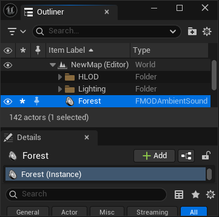
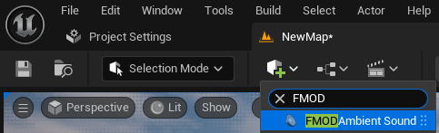
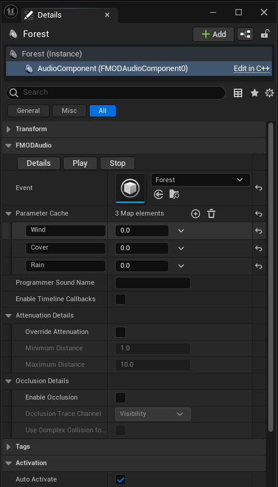
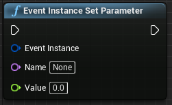

Unreal Integration 2.03

The FMOD Ambient Sound in the FMOD Unreal Integration allows you to easily play an FMOD Studio Event at a specific location in your level. Each Ambient Sound Actor creates and manages an Event Instance, which is handled automatically by the FMOD Audio Component.
You can drag an Event asset directly from the FMOD Content folder in the Content Browser into your level. This will create an FMOD Ambient Sound Actor in your scene with the selected event already assigned.

Searching for FMOD Ambient Sound wil expose the component to be added to the map.

The FMOD Audio Component allows you easily add FMOD events to actors in your map. The Audio Component can start its event instance, assign initial parameter values and additional options.
Use the Event property in the Details panel to assign an FMOD Event. You can:
Enable the Auto Activate property to have the event start playing when the game begins or when the Actor is spawned.
You can also control playback via Blueprints or C++:
Play(). These will automatically release once playback is complete.You can set Initial Parameters values in the component before playback starts. The array will be populated by parameters applied to the event in FMOD Studio. To change parameter values during gameplay during playback via Blueprints of C++:
Event Instance Set Parameter

Emitter->SetParameter("Wind", 0.5f);
An Audio Component can be used to set the key or file path to be played via a Programmer Instrument
Enabling Attenuation Override will apply then be able to apply new minimum and maximum values for falloff distances.
Note: the values entered here will not affect a spatializer on the event that is overriding with its own values.
Enabling occlusion will use a raycast from the event to the listener to determine of occlusion should be applied to the signal of the event. The Channel to be checked against can be changed here. For more information please refer to the Occlusion Settings.